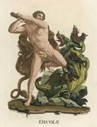
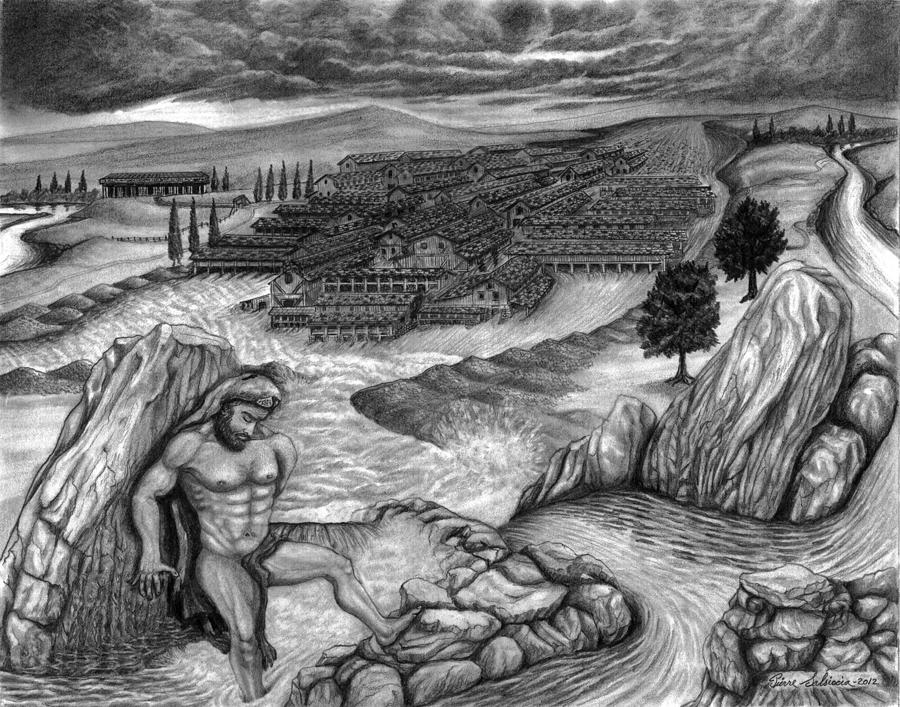
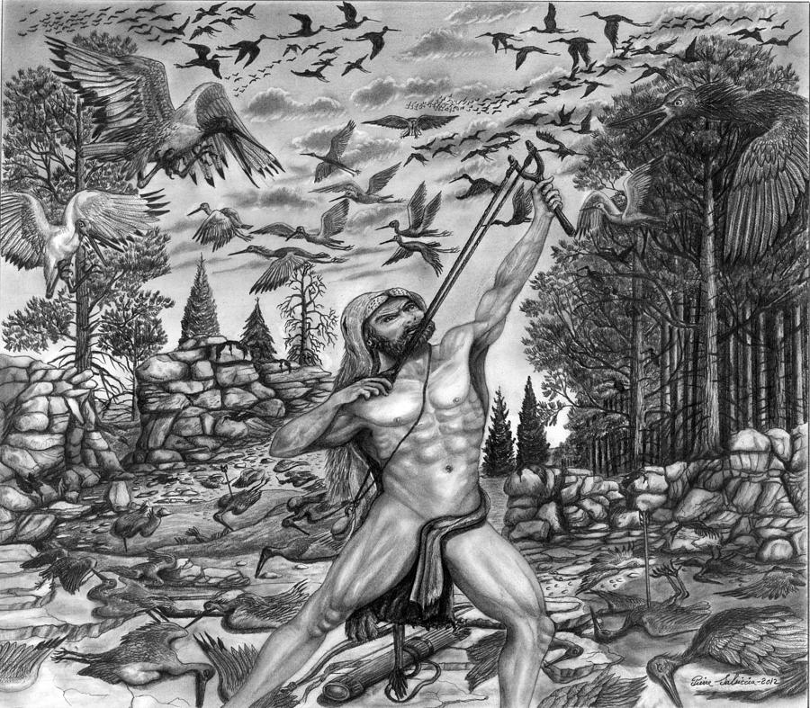
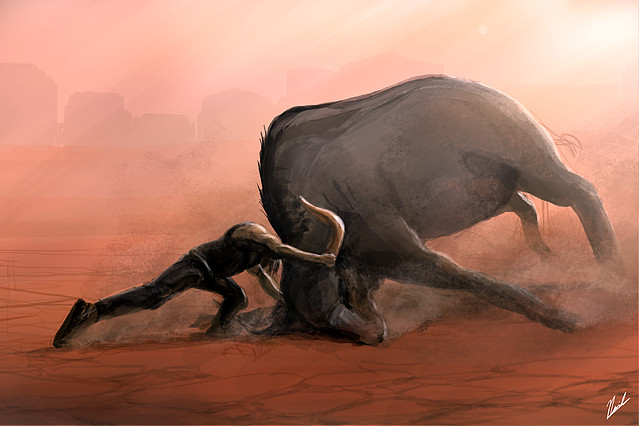
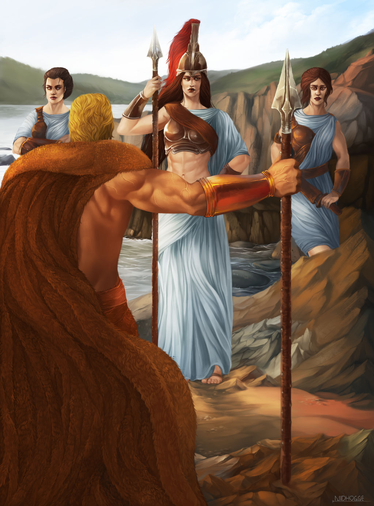
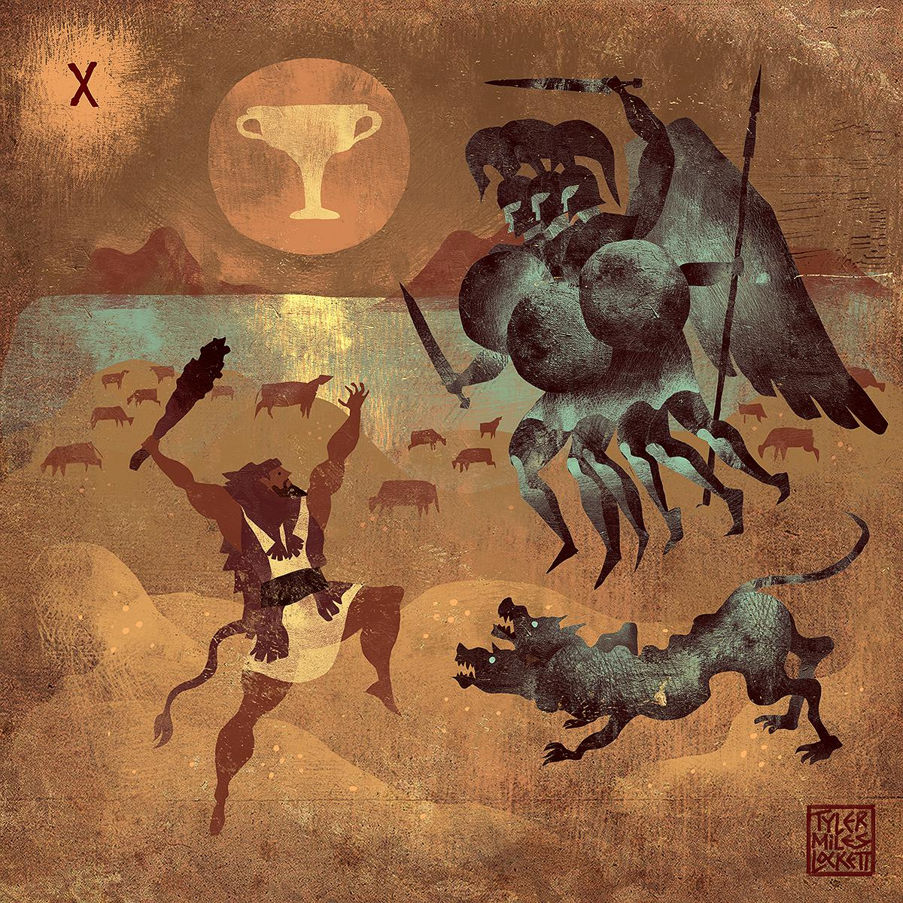
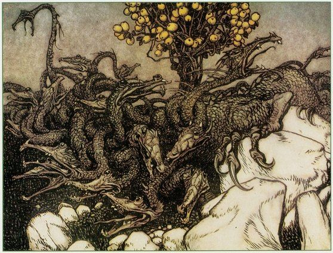
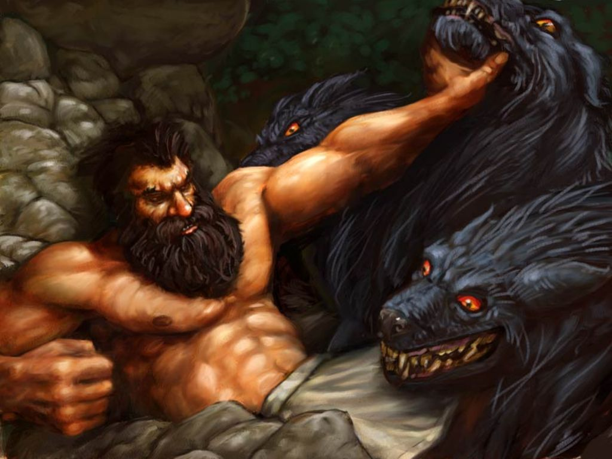

Backstory
Heracles was a demigod born of Zeus ; the king of the gods and Alcmene; a Theban princess. He is known in Rome and the modern West as Hercules
Named Heracles (glory of Hera ) in an attempt to please her, the queen of the gods was still enraged at her husband’s promiscuity and so sent two snakes to kill the baby Heracles in his cradle at 8 months old. However, she was surprised when the baby demigod squeezed both snakes to death in a godly grip .
Later in Thebes, Heracles married King Creon’s daughter Megara and had children. However, in a fit of madness induced by Hera, Heracles killed his children and Megara.
After his madness had been cured with hellebore by Antikyreus, the founder of Antikyra, he realized what he had done and fled to the Oracle of Delphi. Unbeknownst to him, the Oracle was guided by Hera. He was directed to serve King Eurystheus for ten years and perform any task Eurystheus required of him.
Eurystheus decided to give Heracles ten labours, but after completing them, Heracles was cheated by Eurystheus when he added two more, resulting in the Twelve Labors of Heracles .If he succeeded, he would be purified of his sin and, as myth says, he would become a god, and be granted immortality.
2nd Labor - Slay the nine-headed Lernaean Hydra

Second Labor of Heracles
A fire-breathing monster with multiple serpent heads. When one head was cut off, two would grow in its place.
It lived under a tree in a swamp near Lerna. Hera had sent it in hopes it would destroy Heracles' home city because she thought it was invincible. While Heracles battled the chthonic creature, his nephew Iolaus handed him a torch which he used to singe the neck stumps of the heads he cut.
That was how he defeated the monster and dipped his arrows in its poisoned blood, thus envenomizing them and making them so lethal that a single scratch from the arrows would give the victim an extremely painful death.
3rd Labor - Capture the Golden Hind of Artemis
Third Labor of Heracles
Not to kill, but to catch, this hind that was sacred to Artemis ; the goddess of the moon and wild hunting. A different, but still difficult, task.
It cost time, but, having chased it for a year, Heracles caught the hind by shooting it between the sinew and bone of its forelegs without a drop of blood. Artemis intervened, but as soon as Heracles explained the situation to her, she allowed him to take it, and was more impressed at his skill in archery.
Heracles bound the hind, took it and presented it alive to Eurystheus.
4th Labor - Capture the Erymanthian Boar
Fourth Labor of Heracles
A fearsome marauding boar on the loose. Eurystheus set Heracles the Labour of catching it, and bringing it to Mycenae.
Again, a time-consuming task, as he chased it from summer to winter till it got stuck in a snowdrift. Then the tireless hero found the beast, captured it, and brought it to its final spot.
When Eurystheus saw the boar, he hid in terror insde a big pot.
Patience is the heroic quality in the third and fourth Labours.
5th Labor - Clean the Augean stables in a single day

Fifth Labor of Heracles
The Augean stables were the home of 3,000 cattle with poisoned faeces which Augeas had been given by his father Helios , god of the sun.
Heracles was given the near impossible task of cleaning the stables of the diseased faeces. King Augeas bet him twenty cows to one that he could not clean the stables in a day. He accomplished it by borrowing a mattock and digging ditches on both sides of the stables, moving them into the ditches, and then diverting the rivers Alpheios and Pineios to wash the ditches clean within an hour.
6th Labor - Free the Stymphalian swamp of its brass-feathered, man-eating birds

Sixth Labor of Heracles
These aggressive man-eating birds were terrorizing a forest near Lake Stymphalia in northern Arcadia.
Heracles shot them with his arrows but the arrows bounced off their feathers, for they were made of brass. Athena then appeared and handed him a rattle. When he shook the rattle, the birds flew in the air. Heracles shot and killed scores of them, because their under sides were not covered in brass.
He brought the dead birds back as proof of his success to Eurystheus.
7th Labor - Capture the Cretan Bull

Seventh Labor of Heracles
The harmful bull, father of the Minotaur (half man, half bull), was laying waste to the lands round Knossos on Crete. It embodied the rage of Poseidon , god of the seas, at having his gift (the Bull) to Minos diverted from the intention to sacrifice it to himself.
Heracles tracked it to a tree, then tussled with it until he was able to clip a ring through its nose and capture it. Then he carried it on his shoulders to Eurystheus in Tiryns.
Eurystheus saw he bull and got terrified and demanded that it be released, where it wandered to Marathon which it then terrorized, until killed by Theseus.
9th Labor - Obtain the girdle of Hippolyta, Queen of The Amazons

Ninth Labor of Heracles
Hippolyta was an Amazon queen and she had a girdle given to her by her father Ares , the god of war. Heracles had to retrieve the girdle and return it to Eurystheus.
He and his band of companions received a rough welcome because, ordered by Hera, the Amazons were supposed to attack them; however, against all odds, Heracles completed the task and secured the girdle for Eurystheus.
10th Labor - Obtain the cattle of the monster Geryon

Tenth Labor of Heracles
The next challenge was to capture the herd guarded by a two-headed dog called Orthrus, which belonged to Geryon; a giant with three heads and six arms who lived in Erytheia.
While travelling to Erytheia, he passed through the Libyan desert and was so annoyed by the heat he shot an arrow at Helios, the sun. Helios, impressed, lent him his giant cup which Heracles used to find Orthrus, the herdsman Erytion and the owner, Geryon.
He killed the first two with his club and the third with a poisoned arrow shot through the three heads.
Heracles then herded the cattle and had difficulty moving them, because Hera sent her gadflies to sting them in their private parts, which made them go berserk and scatter. He rounded them up amd continued before he realized he was 500 miles off. There he met an ugly snake-tailed woman who promised to round them up on the condition that he kisses her three times.
He did so and kissed her, although begrudgingly, and so the woman wrapped them up.
With all these done, he took them to Eurystheus.
Despite the difficulty, Heracles accomplished these tasks, but Eurystheus in the end did not accept the success the hero had with two of the labours: the cleansing of the Augean stables, because Heracles was going to accept pay for the labour; and the killing of the Lernaean Hydra, as Heracles' nephew, Iolaus, had helped him burn the stumps of the multiplying heads.
11th Labor - Steal the Golden Apples of the Hesperides

Eleventh Labor of Heracles
These sacred fruits were protected by Hera who had set Ladon , a fearsome, hundred-headed, unsleeping dragon as the guardian of the tree on which the apples grew.
Heracles had to first find where the garden was; he asked Nereus for help. He came across the titan Prometheus on his journey, who was chained to a rock where an eagle ate away at his liver. This was a punishment set on him by Zeus for stealing fire from Mount Olympus and giving it to mankind.
Heracles shot the eagle eating at his liver, and in return he helped Heracles with knowledge that his brother Atlas would know where the garden was. He also told Heracles that no mortal could touch the apples, as they would drop dead, and so advised him to persuade Atlas, who as a titan was immortal, to pluck the apples for him.
Heracles sailed on to Tangier, Morocco where the titan Atlas held the heavens. Atlas, who was also the father of the Hesperides, offered to help him with the apples if he would hold up the heavens while he was gone. Heracles shot the dragon Ladon over the garden walls in its heart using one of the arrows dipped in the hydra's blood. Atlas greeted his daughters the Hesperides, plucked some of the apples and went off.
When Atlas returned, he tried to persuade Heracles to hold the heavens for longer while he goes to help Heracles deliver the apples to Eurystheus with his long legs, but Heracles knew that Atlas would go off and free the other titans and then start a rebellion against Olympus, so he told Atlas to hold the heavens while he adjusts his lion skin cloak to make a comfortable support pillow. As Atlas put down the apples to hold the heavens, Heracles wrapped the apples in his lion skin cloak and took off, making Atlas take the burden of the heavens once again, and returned the apples to Mycenae.
Twelfth Labor - Capture and bring back Cerberus

Twelfth and Final Labor of Heracles
His last labour and undoubtedly the riskiest. Eurystheus was so frustrated that Heracles was completing all the tasks that he had given him that he imposed one he believed to be impossible: Heracles had to go down into the underworld of Hades and capture the ferocious three-headed dog Cerberus who guarded the gates. He used the souls to help convince Hades to hand over the dog. He agreed to give him the dog if he used no weapons to obtain him. Though its barbed tail posed a problem, he put it to sleep by squeezing the middle head until the other heads turned blue.
Heracles succeeded and took the creature back to Mycenae, causing Eurystheus to be fearful of the power and strength of this hero.